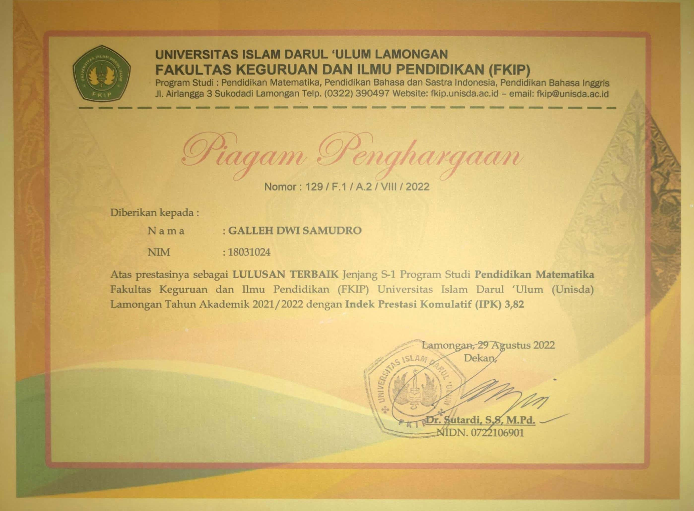
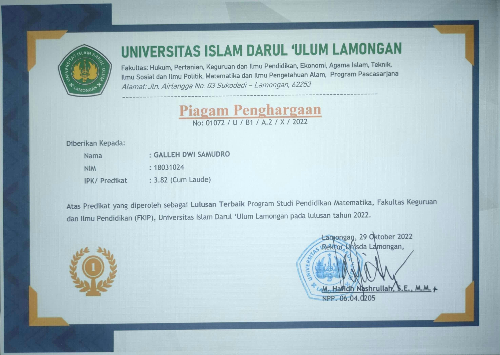

🏆 Achievements & Awards
Recognition of academic excellence and professional contributions
Academic Publications
Honors & Awards
Recognized as the best graduate of the Mathematics Education Study Program for outstanding academic achievement and contributions. Graduated with Cum Laude predicate with GPA 3.82/4.00.
Achievements:
- Developed Android-based interactive learning application for algebraic concepts as thesis project
- Published 2 research papers as first author
- Active in leadership roles and student organizations
Official Certificates
Click on certificates to view full size


Student Exchange Program
Selected through a rigorous selection process to represent UNISDA Lamongan in the prestigious PERMATA-SAKTI (Pertukaran Mahasiswa Tanah Air-Sistem Alih Kredit) student exchange program.
Participated Universities:
- Universitas Muhammadiyah Jakarta
(Sep 2020 - Jan 2021) - Universitas Muhammadiyah Sidenreng Rappang
(Sep 2020 - Jan 2021) - Universitas Muhammadiyah Makassar
(Sep 2020 - Jan 2021)
Key Achievements:
- Successfully balanced academic workload across three different campuses
- Completed Research Education course via OpenLearning platform (March 2021)
- Adapted to different teaching methods and academic cultures
- Built network with students and faculty from multiple institutions
Program Certificates
Click on certificates to view full size